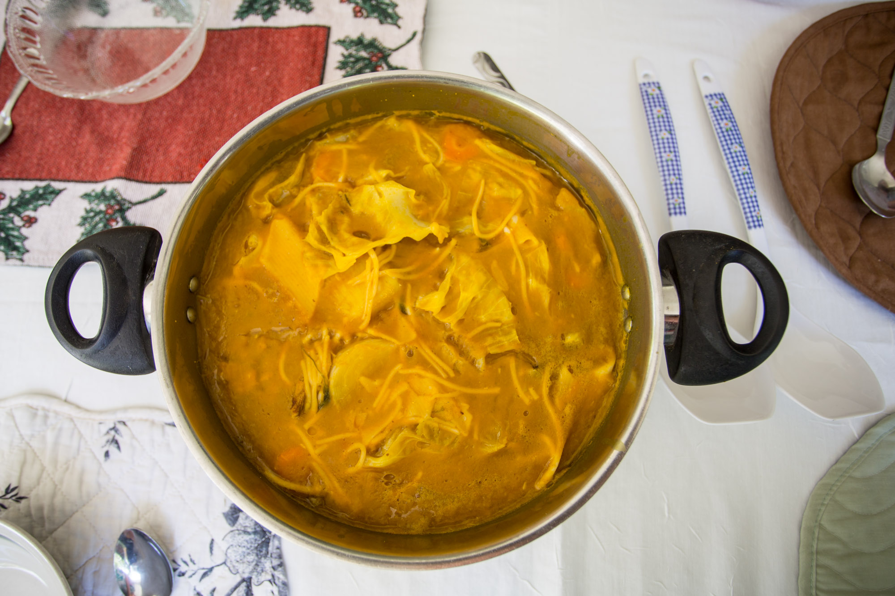

Soupe Joumou
A rich squash-and-beef soup layered with epis, vegetables and pasta, inseparable from Haiti's January 1 celebration of independence.

About this dish
Soupe joumou is one of the most symbolically important dishes in Haitian food culture. The soup combines squash with beef, vegetables, aromatics and often pasta, but the exact contents shift by household. The goal is a generous, celebratory bowl whose squash base carries the flavor of the meat and seasoning rather than tasting like a simple puree.
A spoonful of Haitian epis is especially useful here because it seasons the beef before simmering and establishes the fresh herb, pepper and garlic backbone of the broth.
January 1 in a bowl
Soupe joumou is closely associated with Haitian Independence Day on January 1, 1804. The dish has become a culinary symbol of freedom and collective memory: a soup once associated with colonial hierarchy is now prepared and shared as a national celebration.
Families may begin preparing components before New Year's Day and serve the soup to relatives, neighbors and visitors. The specifics vary, but the act of making and sharing the soup is as important as any single ingredient list.
This is a practical home-kitchen version, not a claim that one recipe can represent every Haitian family tradition.
Preparation notes
Give the epis and lime at least 20 minutes to season the surface before browning.
The squash should thicken and color the broth while the other vegetables remain distinct.
Keep it whole for aroma and controlled heat. Remove it before the skin tears unless you intentionally want a much hotter soup.
Ingredients & detailed method
Ingredients
- 1 1/2 lb beef stew meat
- 2 tbsp Haitian epis
- 1 tbsp lime juice
- 2 lb calabaza or butternut squash, peeled and cubed
- 8 cups water or unsalted stock, divided
- 2 carrots, sliced
- 2 potatoes, cubed
- 1/4 small green cabbage, chopped
- 1 celery stalk, sliced
- 3 sprigs thyme
- 1 whole Scotch bonnet chile
- 1 cup small pasta
- Kosher salt and black pepper
Method
- 1. Toss the beef with epis, lime juice, salt and pepper. Rest 20–30 minutes while you prepare the vegetables.
- 2. Heat a heavy soup pot over medium-high heat. Brown the beef in batches so the pieces color instead of steaming. Checkpoint: look for browned edges and fond on the bottom of the pot.
- 3. Return all beef to the pot, add about 5 cups water or stock, scrape the browned bits loose and simmer partly covered 45–60 minutes.
- 4. Meanwhile, simmer the squash in a separate saucepan with enough water to cover until completely soft, 15–20 minutes. Blend with 1–2 cups of its cooking liquid until smooth.
- 5. Stir the squash puree into the beef pot. Add carrots, potatoes, celery, thyme and the whole Scotch bonnet.
- 6. Simmer 20 minutes. Checkpoint: the beef should be close to tender, potatoes should yield at the edges, and the broth should be thick enough to lightly coat a spoon.
- 7. Add cabbage and pasta. Simmer 10–12 minutes, stirring occasionally so pasta does not stick.
- 8. Check the Scotch bonnet frequently and remove it before it splits. Add more hot water or stock if the soup becomes too thick.
- 9. Taste and adjust salt, pepper and lime. Rest 10 minutes before serving so the broth settles around the vegetables.
Start with the seasoning base
Read further
Fringe Table recipes are practical home-kitchen adaptations. Family and regional versions differ in vegetables, pasta shapes, seasoning and texture.